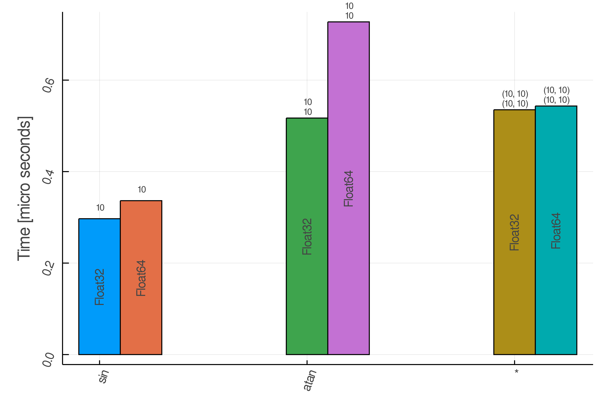
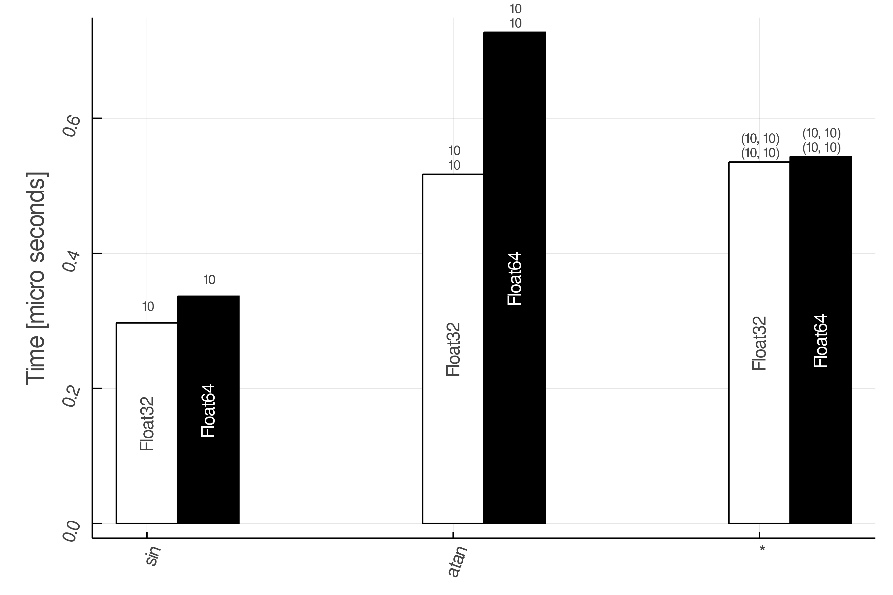

AcuteBenchmark
AcuteBenchmark allows you to benchmark functions that get Arrays as their input.
Creates random inputs for a function based on limits, types, and dims specified.
config = Funb(
fun = sin,
limits = [(-1,1)],
types = [Float32, Float64],
dims = [100],
)or just in a compact form:
config = Funb( sin, [(-1,1)], [Float32, Float64], [100])use benchmark! to run the benchmark:
using AcuteBenchmark
configs = FunbArray([
Funb( sin, [(-1,1)],[Float32, Float64], [100] );
Funb( atan, [(-1,1), (-1,1)],[Float32, Float64],[100, 100] );
Funb( *, [(-1, 1), (-1, 1), (-1, 1)], [Float32, Float64], [(100,100), (100,100)] );
])
benchmark!(configs)Plot the benchmark result using:
bardim(configs)
To have a same color for the same types use:
bardim(configs, true)
AcuteBenchmark.FunbAcuteBenchmark.FunbArrayAcuteBenchmark.bardimAcuteBenchmark.benchmark!AcuteBenchmark.numArgsDimsAcuteBenchmark.save
AcuteBenchmark.Funb — TypeFunb(;fun, limits, types, dims)Creates random inputs for a function based on limits, types, and dims specified.
Arguments
- functions: function : Module.fun or :(Module.fun)
- limits: min and max of possible values
- types : type of elements
- dims: Array of dimensions of the input vectors for each argument. Each column is for a new set of sizes, and each row is for different input arguments.
Examples
config = Funb(
fun = sin,
limits = [(-1,1)],
types = [Float32, Float64],
dims = [100],
)or just in a compact form:
config = Funb( sin, [(-1,1)], [Float32, Float64], [100])AcuteBenchmark.FunbArray — MethodFunbArrayArray of Funb configs for different functions.
Examples
using AcuteBenchmark
configs = FunbArray([
Funb( sin, [(-1,1)],[Float32, Float64], [100] );
Funb( atan, [(-1,1), (-1,1)],[Float32, Float64],[100, 100] );
Funb( *, [(-1, 1), (-1, 1), (-1, 1)], [Float32, Float64], [(100,100), (100,100)] );
])
You can also directly give the configs in vectors:
configs = FunbArray(
fun = [sin,
atan,
*],
limits = [[(-1,1)],
[(-1,1), (-1,1)],
[(-1, 1), (-1, 1), (-1, 1)]],
types = fill([Float32, Float64], (3)),
dims = [ [100],
[100, 100],
[(100,100), (100,100)] ],
)AcuteBenchmark.bardim — Functionbardim(Main.configs, :fun)Plots bars for each dimension set.
It is assumed that number of dimension sets are the same.
Examples
bardim(configs)AcuteBenchmark.benchmark! — Methodbenchmark!(config::StructArray{Funb}) # FunbArray{Funb}
benchmark!(config::Array{Funb})Performs the benchmarking on a given Funb.
Examples
using AcuteBenchmark
configs = FunbArray([
Funb( sin, [(-1,1)],[Float32, Float64], [100] );
Funb( atan, [(-1,1), (-1,1)],[Float32, Float64],[100, 100] );
Funb( *, [(-1, 1), (-1, 1), (-1, 1)], [Float32, Float64], [(100,100), (100,100)] );
])
benchmark!(configs)AcuteBenchmark.numArgsDims — MethodnumArgsDims(in)Finding number of arguments and number of dimension sets
Examples
numArgs, numDimsSets = numArgsDims(in)AcuteBenchmark.save — Methodsave(filename, configs)Save benchmark data
Examples
save("benchmarkdata.jld2", configs)